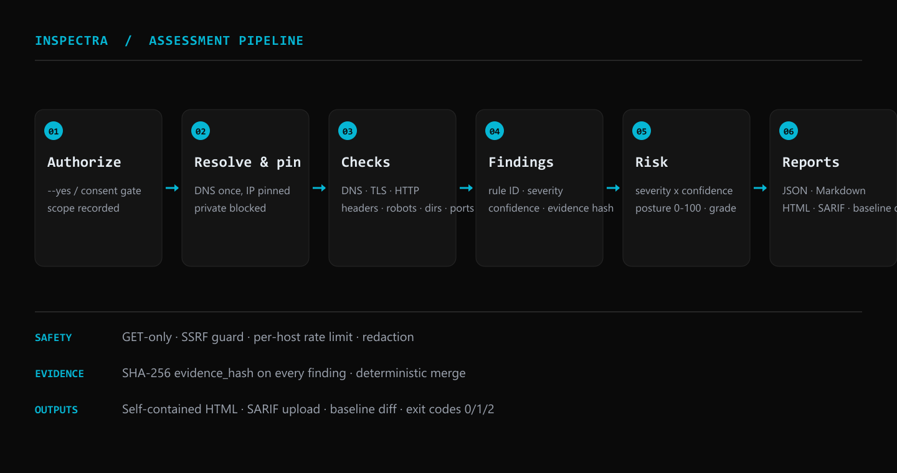

Passive · Explainable · CI-ready
Security findings you can defend.
Inspectra is a single-command CLI for systems you own or are authorized to test. It produces a posture score, rule-ID findings with evidence hashes, and reports in JSON, Markdown, HTML and SARIF. No payloads. No exploitation.
Measured, not marketed
Four additional lab targets are present but not measured on this platform. Full results.
How a scan flows

One command, four outputs
$ inspectra scan http://127.0.0.1:8001 --yes --skip-ports --allow-private --authorized --format html
Target http://127.0.0.1:8001
Posture 61.6 / 100 - D
Summary 3 findings · 0 high · 2 medium · 0 low · 1 info
medium HDR-001 Missing security header: Strict-Transport-Security
info HTP-003 Web server software disclosed (with version)
medium TLS-001 HTTPS not available
Reports written to inspectra-report